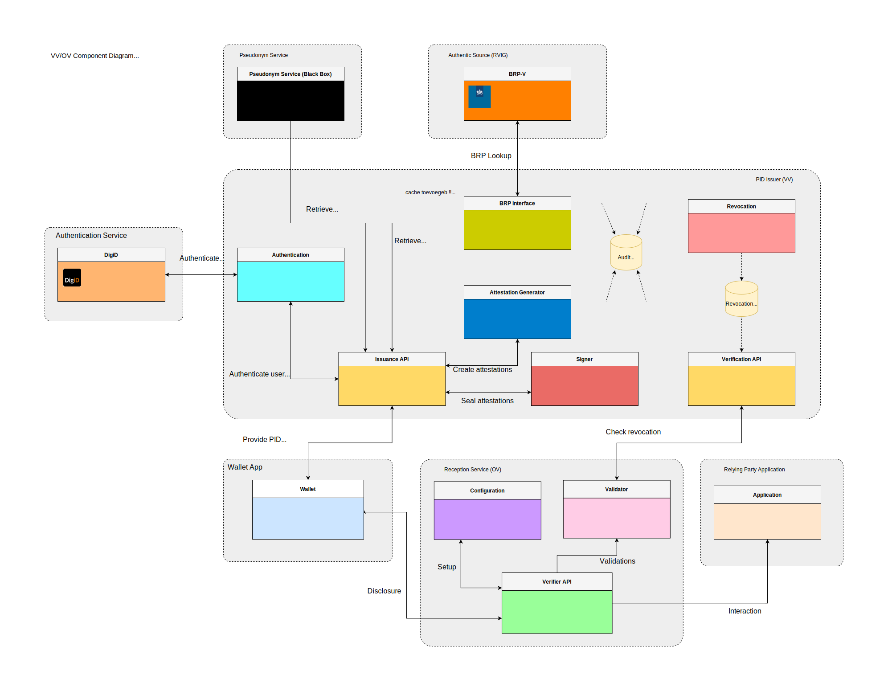

Create a Verifier
Introduction
A verifier (also known as a “relying party” or an “ontvangde voorziening”, essentially an entity that wants to verify attestations presented by the NL-Wallet) will want to have a global idea of what they needs to do when integrating their application with the NL-Wallet environment.
This document provides a global outline of components used, the necessary decisions, data, and certificate(s), and guides the setup of a so-called verifier/relying-party/ontvangende-voorziening plus integration thereof with their own frontend and backend.
About names
Due to how we build upon existing standards, and due to terminology used in other guidelines and architectures we adhere to, we use various other names interchangably for a verifier. These things all reference the same thing:
Verifier
Relying Party
Reception Service
Ontvangende Voorziening
In this document we use the name “Verifier” primarily, unless we know that a document we reference uses one of these other names.
What we’re going to cover
You want to verify certain attributes of a natural person which are contained in the NL-Wallet. What we’re going to cover:
Architecture and component overview
Determine which attributes you want to verify
Collect required metadata
Create a reader certificate
Configure your
verification_serverProof-of-function, test calls
Integrate with your own application
We’ll start with an overview of the system architecture, specifically its main components and where to find more information.
We’ll then cover the decisions you need to make regarding which attributes you need to verify.
We’ll list required fields you need to construct a reader_auth.json which will
become part of your reader certificate, as a X.509v3 custom extension, and we’ll
show you how to create the reader certificate.
Finally, we’ll give a high-level overview of what a verifier looks like, and what the disclosure flow looks like.
Architecture overview

In the above diagram, we see the main components involved in a disclosure session. The main components described in the diagram are:
DigiD: Digitale Identiteit, a digital identification system;
Pseudonym Service: A service that pseudonimizes BSN numbers;
(BRP-V) Authentic Source: A source of attributes, made accessible by a so-called Verstrekkende Voorziening (VV);
VV: Verstrekkende Voorziening, an issuer, the party that issues attributes;
OV: Ontvangende Voorziening, a verifier, the party that want to verify attested attributes;
Relying Party Application: An app running on-premises or in-cloud of the verifier that needs to do something with the result of a verification of attributes;
Wallet App: The NL-Wallet app running on a mobile device;
Missing from the above diagram, but worth mentioning:
Wallet Web The frontend helper JavaScript/TypeScript library which helps verifiers integrate their application with the NL-Wallet platform.
For the purpose of this document, we won’t go into all components mentioned above, in particular, “DigiD” and “Pseudonym Service” are out-of-scope with regards to this outline.
Component overview
The NL-Wallet platform largely consists of:
issuers: (also known as Verstrekkende Voorzieningen), which can issue attested attributes;
verifiers: (also known as Ontvangende Voorzieningen or Relying Parties), which can verify attested attributes they are interested in;
backend: services that run in the NL-Wallet datacenter(s) or cloud that facilitate various functions for the mobile app (usually not interacted with directly, by either issuers or verifiers);
app: the NL-Wallet mobile app, which contains attested attributes, received from issuers, and which it can disclose to verifiers.
Verifiers configure and maintain a verification_server on their own premises
or cloud environments, which they integrate with their own application, and which
interacts with the NL-Wallet app, in order to verify attested attributes.
This document is about configuring and integrating a verification_server. To
have a broader view on the NL-Wallet platform as a whole, you can have a look at
the Architecture Documents. Specifically, the Project Start Architecture,
the Solution Architecture Document and the Design Considerations (all of which
can be found at the aforementioned link).
The NL-Wallet platform is fully open-source; you can find the project on GitHub:
nl-wallet (do note that we have a dependency on nl-rdo-max to talk to
DigiD, but this is specifically for the pid_issuer and irrelevant to you
as a third-party developing a verifier).
Preparations
The subsections below describe the decisions you need to make as a verifier with
regards to attested attributes you want to verify, what data we require from
you, how to create a reader certificate for your usecase (which is configured
for usage within the verification_server).
It is assumed you have onboarded succesfully - i.e., you are running your own CA and the public key of that CA has been shared with the operations team who will need to add your CA public key to the trust anchors of the app.
Decide what you want to verify
TODO Update the decision section for generic issuance
You need to decide which attested attributes you want to verify, and consider the purpose of the verification. So:
Which attribute(s):
birth_date,age_over_18,gender, etcWhat purpose: describe why you need to verify the attribute(s)
Attributes in are grouped in things called attestations and the app displays
these attestations as cards. The attestations are stored in the mdoc format
(see ISO/IEC 18013-5:2021 and ISO/IEC 23220-4).
In the verification_server we have the concept of usecases, which
encapsulate what you want to use a disclosure for, for example to verify a legal
age or to login to a website. Essentially, every reader certificate that you
create to be able to verify attested attributes for some purpose, represent a
certificate/key-pair, and the verification_server can support multiple
usecases. In this guide we will be creating a single certificate (so, for a
single usecase), but there’s nothing stopping you from creating multiple
reader certificates for different usecases.
We currently (as of 2024-08-08) support two mdoc doctypes: PID_DOCTYPE and
ADDRESS_DOCTYPE. An mdoc contains one or multiple attributes that you can
verify. For your convenience, we list the attributes for both doctypes here:
What a PID_DOCTYPE looks like
TODO Update the PID_DOCTYPE section for generic issuance
Attribute |
Item |
Source |
Description |
|---|---|---|---|
|
10210 |
haal_centraal |
First names (voornamen) |
|
10230, 10240 |
haal_centraal |
Prefix (voorvoegsel) and surname (achternaam) |
|
unimplemented |
First names at birth (voornamen bij geboorte) |
|
|
unimplemented |
Birth name (geboortenaam) |
|
|
unimplemented |
Gender (geslacht) |
|
|
10310 |
haal_centraal |
Birth date (geboortedatum) |
|
derived |
Older than 18 (ouder dan 18) |
|
|
unimplemented |
Place of birth (geboorteplaats) * |
|
|
unimplemented |
City, town or village of birth (geboortestad) |
|
|
unimplemented |
State or province of birth (geboortestaat of -provincie) |
|
|
unimplemented |
Country of birth (geboorteland) |
|
|
10120 |
haal_centraal |
Citizen service number (burgerservicenummer) |
_* birth_place is a combination of birth_country, birth_state and
birth_city_
What an ADDRESS_DOCTYPE looks like
TODO Update the ADDRESS_DOCTYPE section for generic issuance
Attribute |
Item |
Source |
Description |
|---|---|---|---|
|
unimplemented |
Address (adres) * |
|
|
81115, 81110 |
haal_centraal |
Named public space (naam openbare ruimte) or street name (straatnaam) |
|
81120, 81130, 81140 |
haal_centraal |
House number (huisnummer) |
|
81160 |
haal_centraal |
Postal code (postcode) |
|
81170 |
haal_centraal |
City, town or village (woonplaats) |
|
unimplemented |
State or province (staat of provincie) |
|
|
unimplemented |
Country (land) |
_* resident_address is a combination of resident_street, house_number,
postal_code, city, state and country_
Collect the attributes you want to verify and describe the purpose, they are needed when we file the request later on.
Required metadata
TODO Update the required metadata section for generic issuance
A reader certificate contains a bunch of metadata, which we store as a part of the certificate in a so-called X.509v3 extension. We use this data to know which attested attribute you want to verify, and to present a view of you, the verifier in the NL-Wallet app GUI. What we need to know:
REQUIRED_DATA
Attribute |
Languages |
Description |
|---|---|---|
|
|
For what purpose are you attesting? Login? Age verification? etc. |
|
- |
Do you have an intent to retain data? For how long? |
|
- |
Do you have an intent to share data? With whom? |
|
- |
Do you allow users to request deletion of their data, yes/no? |
|
|
Name of the verifier as shown in the app app. |
|
|
Legal name of the verifier. |
|
|
Short one-sentence description or mission statement of the verifier. |
|
- |
The home URL of the verifier. |
|
|
The home city of the verifier. |
|
|
Bank, Municipality, Trading, Delivery Service, etc. |
|
- |
A logo to display in the app, preferably in SVG format. |
|
- |
Two-letter country code of verifier residence. |
|
- |
Chamber of commerce number of verifier. |
|
- |
Link to verifier’s privacy policy. |
|
- |
What is the URL the user sees in the address bar when they start disclosure? |
|
- |
List of attributes determined in previous section. |
Note: In the Languages column where it says nl+en for example, please
provide both a dutch and an english answer.
Create reader authentication JSON
TODO Update the reader_auth.json creation section for generic issuance
When you’ve collected all the required metadata, you are ready to create the
reader_auth.json file. For illustrative purposes, here is an example for the
municipality of Amsterdam:
{
"purposeStatement": {
"nl": "Inloggen",
"en": "Login"
},
"retentionPolicy": {
"intentToRetain": true,
"maxDurationInMinutes": 525600
},
"sharingPolicy": {
"intentToShare": false
},
"deletionPolicy": {
"deleteable": false
},
"organization": {
"displayName": {
"nl": "Gemeente Amsterdam",
"en": "City of Amsterdam"
},
"legalName": {
"nl": "Gemeente Amsterdam",
"en": "City of Amsterdam"
},
"description": {
"nl": "Alles wat we doen, doen we voor de stad en de Amsterdammers.",
"en": "Everything we do, we do for the city and the people of Amsterdam."
},
"webUrl": "https://www.amsterdam.nl",
"city": {
"nl": "Amsterdam",
"en": "Amsterdam"
},
"category": {
"nl": "Gemeente",
"en": "Municipality"
},
"logo": {
"mimeType": "image/svg+xml",
"imageData": "<svg width=\"64\" height=\"64\" viewBox=\"0 0 64 64\" fill=\"none\" xmlns=\"http://www.w3.org/2000/svg\"><rect width=\"64\" height=\"64\" rx=\"12\" fill=\"#FF0000\"/><path d=\"M25 53.1823L29.1985 48.9481L25 44.7139L27.8015 41.8886L32 46.1228L36.1985 41.8886L39 44.7139L34.8015 48.9481L39 53.1823L36.191 56L31.9925 51.7658L27.794 56L25 53.1823ZM25 19.2861L29.1985 15.0519L25 10.8253L27.8015 8L32 12.2342L36.191 8L38.9925 10.8253L34.794 15.0595L38.9925 19.2937L36.191 22.1114L31.9925 17.8772L27.794 22.1114L25 19.2861ZM25 36.2455L29.1985 32.0114L25 27.7848L27.8015 24.9594L32 29.1936L36.1985 24.9594L39 27.7848L34.8015 32.0189L39 36.2531L36.191 39.0709L31.9925 34.8367L27.794 39.0709L25 36.2455Z\" fill=\"white\"/></svg>"
},
"countryCode": "nl",
"kvk": "34366966",
"privacyPolicyUrl": "https://www.amsterdam.nl/privacy"
},
"requestOriginBaseUrl": "https://www.amsterdam.nl",
"authorizedAttributes": {
"urn:eudi:pid:nl:1": [["urn:eudi:pid:nl:1", "bsn"]]
}
}
Example screenshot of reader authentication metadata used in the app
The data from reader_auth.json is used in various parts of the app. For
illustrative purposes, see below a screenshot of a screen showing details
about the municipality of Amsterdam:

Creating a reader certificate
In the following code block, we clone the nl-wallet repository, enter its directory, set a target directory and specify an identifier (this identifier resembles your organization, lowercase characters a-z, can end with numbers but not begin with them).
We then make sure the target directory exists, and invoke cargo (rust’s build
tool) to in turn invoke wallet_ca which creates the reader certificate and
key.
Finally, we invoke openssl to convert our PEM certificate and key into DER
format.
Note: You need a reader_auth.json, which you can base on the example shown in the
previous section.
Note: You will need to have onboarded, which means you have created your own CA.
# Git clone and enter the nl-wallet repository if you haven't already done so.
git clone https://github.com/MinBZK/nl-wallet
cd nl-wallet
# Set and create target directory, identifier for your certificates.
export TARGET_DIR=../ca-target
export IDENTIFIER=foocorp
mkdir -p "${TARGET_DIR}"
# Create the reader certificate using wallet_ca.
cargo run --manifest-path "wallet_core/Cargo.toml" --bin "wallet_ca" reader \
--ca-key-file "${TARGET_DIR}/ca.${IDENTIFIER}.key.pem" \
--ca-crt-file "${TARGET_DIR}/ca.${IDENTIFIER}.crt.pem" \
--common-name "reader.${IDENTIFIER}" \
--reader-auth-file "reader_auth.json" \
--file-prefix "${TARGET_DIR}/reader.${IDENTIFIER}"
# Convert certificate PEM to DER.
openssl x509 \
-in "${TARGET_DIR}/reader.${IDENTIFIER}.crt.pem" -inform PEM \
-out "${TARGET_DIR}/reader.${IDENTIFIER}.crt.der" -outform DER
# Convert key PEM to DER.
openssl pkcs8 -topk8 -nocrypt \
-in "${TARGET_DIR}/reader.${IDENTIFIER}.key.pem" -inform PEM \
-out "${TARGET_DIR}/reader.${IDENTIFIER}.key.der" -outform DER
Verification server installation
TODO Update verification_server install section for generic issuance
After you have obtained a certificate for your usecase, following the
previously documented steps, you are ready to setup and configure your
verification_server.
Obtaining the software
The verification_server binary can be obtained by compiling the Rust code from
our repository, or be provided to you. As of this writing (2024-08-08) we
do not yet make binaries available automatically (work-in-progress). And so you
can either compile the source code (possible, but not supported as of yet) or
ask us for a binary. In the short-term, especially in light of the coming shared
testing cases, we will provide binaries to relying parties manually.
Creating a database backend (optional)
This section is optional; You can run the verification_server with a storage
URL memory://, which is the default, which will make it store session state in
memory (which will be bound to a specific instance of a verification_server).
When using in-memory session state, on server shutdown or crash, any session
state will be lost. When using a postgres:// storage URL in the
verification_server.toml configuration file, it causes the server to store its
session state in a PostgreSQL database.
In this section we’ll assume you don’t have a PostgreSQL database server yet, and set that up using docker (although you could set it up bare-metal also, which is left as an exercise to the reader in case such a configuration is preferred). We’ll then create a database, configure credentials and configure the schema (tables, columns).
Create a database server
Since we’ll be using Docker, we’ll run the latest version of PostgreSQL (version
16.3 as of this writing), using a Docker volume named postgres for the
database storage. We’ll run in the background (the --detach option) and
auto-clean up the running container after stop (--rm). We create two random 16
character strings for the postgres and wallet users:
# Create a random password for the postgres user.
export PGPASSWORD="$(openssl rand -base64 12)"
# Run a Docker image named postgres.
docker run --name postgres --volume postgres:/var/lib/postgresql/data \
--rm --detach --publish 5432:5432 --env POSTGRES_PASSWORD="$PGPASSWORD" postgres
Create user and database itself:
Next, we’ll create a user for the database and the database itself:
# Create a random password for the wallet user.
export WAPASSWORD="$(openssl rand -base64 12)"
# Note that the below commands use PGPASSWORD to execute.
psql -h localhost -U postgres -c "create user wallet with password '$WAPASSWORD';"
psql -h localhost -U postgres -c "create database verification_server owner wallet;"
Apply database schema:
Finally, we’ll create a verification_server_schema.sql file and run that:
cat <<EOF > "verification_server_schema.sql"
SET statement_timeout = 0;
SET lock_timeout = 0;
SET idle_in_transaction_session_timeout = 0;
SET client_encoding = 'UTF8';
SET standard_conforming_strings = on;
SET check_function_bodies = false;
SET client_min_messages = warning;
SET row_security = off;
SET default_tablespace = '';
SET default_table_access_method = heap;
-- Create table.
CREATE TABLE IF NOT EXISTS public.session_state (
type character varying NOT NULL,
token character varying NOT NULL,
data json NOT NULL,
status character varying NOT NULL,
last_active_date_time timestamp with time zone NOT NULL
);
-- Set owner.
ALTER TABLE public.session_state OWNER TO wallet;
-- Add constraint.
DO \$\$
BEGIN
ALTER TABLE ONLY public.session_state
ADD CONSTRAINT session_state_pkey PRIMARY KEY (type, token);
EXCEPTION
WHEN duplicate_table THEN -- Catch on PostgreSQL <= 9.6
WHEN duplicate_object THEN -- Catch on PostgreSQL >= 9.6 and <= 10.1
WHEN invalid_table_definition THEN -- Catch on PostgreSQL >= 11.9
RAISE WARNING 'Constraint already exists, skipping';
END;
\$\$;
-- Create index.
CREATE INDEX IF NOT EXISTS session_state_type_status_last_active_date_time_idx
ON public.session_state USING btree (type, status, last_active_date_time);
EOF
psql -h localhost -U postgres -d verification_server -f "verification_server_schema.sql"
You now have a database server running, with an admin user named postgres and
a regular user named wallet for which you can see the passwords by issuing:
echo -e "postgres: $PGPASSWORD\n wallet: $WAPASSWORD\n". Take a moment to
store them somewhere, because you’ll need them later on.
The database in the server is called verification_server, and contains the
above default schema (i.e., a session_state table with a primary key
constraint and an index on last_active_date_time).
Creating a configuration
In the following sections we’ll create environment variables for specific settings, which we will finally use to construct a configuration file.
The storage settings
The default storage settings URL is memory:// which causes the server to store
session state in-memory, which is ephemeral. I.e., on server crash or shutdown,
any existing session state is lost. When you use the postgres:// URL, you tell
the server to store session state in a PostgreSQL database (see previous
optional section on setting up the database).
Using in-memory session state
export WASTORAGEURL="memory://"
Using database persisted session state (optional)
export WAUSERNAME="wallet"
# Note: We assume that you still have $WAPASSWORD set in your environment.
# See previous section documenting how to set up a database backend.
export WADBHOST="localhost"
export WADBPORT=5432
export WADATABASE="verification_server"
export WASTORAGEURL="postgres://$WAUSERNAME:$WAPASSWORD@$WADBHOST:$WADBPORT/$WADATABASE"
Determine public URL
The public_url is the URL that is used to reach the public interface of the
verification_server from the internet.
For example, internally, you might host your server on a machine called
verification.internal.root.lan, whilst you’ve set-up a load balancer or
reverse proxy which serves verify.example.com, which is the name you use on
the internet to reach this internally hosted service (i.e., via the load
balancer or reverse proxy).
In this document, we’ve previously used “Mijn Amsterdam” as an example, so lets configure a plausible example URL:
export WAPUBLICURL="https://verify.example.com/"
Universal link base URL
The universal link base URL is used to configure the verification_server to
communicate the correct environment-specific universal link to the the mobile
operating system which is running the NL-Wallet app. It is used to trigger the
mobile operating system to start the NL-Wallet app when clicking the link or
scanning the QR code.
You should have received the universal link base URL as part of the onboarding process.
For illustrative purposes, if you want to configure your verification_server
for usage with a Wallet App built for an acceptance environment, you would
configure it as follows (note that example.com is a fake domain):
export WAULBASEURL="https://app.example.com/ul/"
The ephemeral ID secret
The ephemeral ID secret is used for (rotating) QR code generation, and
configured once in the verification_server.toml:
export WAEPHEMERALIDSECRET="$(dd if=/dev/urandom bs=64 count=1 | xxd -p | tr -d '\n')"
Configuring the trustanchor and the usecase
In the Creating a reader certificate section
we’ve created a reader certificate for your usecase.
We’ll assume your usecase certificate is in the DER format and named
rp.crt, your key is named rp.key, and finally you have two trust anchor (ca)
certificates called issuer_ta.crt and reader_ta.crt. The issuer_ta.crt
file contains the root certificate for issuer certificates and the
reader_ta.crt file contains the root certificate for reader certificates.
Finally, you’ll have to come up with some name for your usecase; in the
settings below, we assume the name login-mijn-amsterdam. Note that the name is
only used as an identifier, it can be freely chosen.
export WAUSECASENAME="login-mijn-amsterdam"
export WAUSECASECERT="$(cat rp.crt | openssl base64 -e -A)"
export WAUSECASEKEY="$(cat rp.key | openssl base64 -e -A)"
export WAISSUERTRUSTANCHOR="$(cat issuer_ta.crt | openssl base64 -e -A)"
export WAREADERTRUSTANCHOR="$(cat reader_ta.crt | openssl base64 -e -A)"
Creating the configuration file
In the previous sections, you’ve set a bunch of environment variables which we
will use in this section to generate our verification_server.toml
configuration file (i.e., you need to run the following commands in the same
place where you previously typed the export commands). To generate our
configuration file, issue the following command:
cat <<EOF > "verification_server.toml"
public_url = '$WAPUBLICURL'
universal_link_base_url = '$WAULBASEURL'
issuer_trust_anchors = [
"$WAISSUERTRUSTANCHOR",
]
reader_trust_anchors = [
"$WAREADERTRUSTANCHOR",
]
[storage]
url = '$WASTORAGEURL'
[wallet_server]
ip = '0.0.0.0'
port = 8001
[requester_server]
ip = '0.0.0.0'
port = 8002
ephemeral_id_secret = '$WAEPHEMERALIDSECRET'
[usecases.$WAUSECASENAME]
certificate = '$WAUSECASECERT'
private_key = '$WAUSECASEKEY'
EOF
Note: when using an HSM key, the private_key field of the usecase should be
the HSM key label, and the configuration must contain an [hsm] section, with
the following structure.
[hsm]
library_path = "${HSM_LIBRARY_PATH}"
user_pin = "${HSM_USER_PIN}"
max_sessions ="${HSM_MAX_SESSIONS}"
max_session_lifetime_in_sec = "${HSM_SESSION_LIFETIME}"
It is possible to use both hardware and software private keys in the same
verification server instance. When the private_key contains a Base64 DER-
encoded private key, it’s used as software key, otherwise it will use the value
of private_key as the HSM key label. The configuration is verified at startup,
so invalid (key) configuration will be reported immediately.
You should now have a configuration file in the current directory called
verification_server.toml. Feel free to check the file to see if everything
looks like you’d expect.
Configuring an API key (optional)
In our configuration, the verification_server is configured with a separate
port for the public (wallet) and private (requester) endpoints. The private
endpoint can additionally be configured to require an API key, which needs to
be passed with a request as an Authorization header containing a string
Bearer your_secret_key.
To configure the usage of an API key, you need to add a section as follows to
the configuration file (choose a better key than your_secret_key):
[requester_server.authentication]
api_key = "your_secret_key"
Configuring cross-origin resource sharing (optional)
Cross-Origin Resource Sharing (CORS) can be configured on verification_server
when the application is hosted on a different URL than the verification_server
itself.
To configure CORS, you need to add allow_origins to the [verifier] section
with a list of all the URLs you need. Replace "https://example.com" in
the following snippet with a comma separated list of the required urls.
[verifier]
allow_origins = ["https://example.com"]
Running the server for the first time
TODO Update verification_server running section for generic issuance
In section Obtaining the software we have described
how you can obtain the software. In this section, we assume you have a Linux
AMD64 static executable called verification_server that you can run. Make sure
the configuration file verification_server.toml is in the same directory as
the binary and run it in the foreground as follows:
./verification_server
Server logging
Logging can be configured using the environment variable RUST_LOG. For
example, to run the server with debug logging, use the following command.
RUST_LOG=debug ./verification_server
In addition the verification_server.toml contains the following options:
log_requests = false # whether HTTP requests/responses should be logged
structured_logging = false # if `true` logging is done in JSON
Validating the configuration
TODO Update verification_server validation section for generic issuance
During startup, the verification_server performs some checks on the
configuration to prevent common configuration problems. Most notably the
following checks are performed:
Verify all use-case certificates are valid
Verify all use-case certificates are signed by any of the
reader_trust_anchorsVerify all use-case certificates are reader-certificates, and contain the necessary Extended Key Usages and the
reader_auth.jsonVerify all use-case key-pairs are valid, i.e. the public and private keys should belong together
If this process discovers any configuration errors, the application will report an error and abort. For more insights into this process, enable debug logging.
If all went well, the server is now running and ready to serve requests. To test the service, you can send session initiation requests and status requests to it.
Check out the Example calls section for how to do that. For
example, when you
initiate a disclosure session, you will see
something like the following output from the verification_server:
2024-08-09T14:30:55.016412Z INFO openid4vc::verifier: create verifier session: some_usecase
2024-08-09T14:30:55.019806Z INFO openid4vc::verifier: Session(XH32jw4jRSnQsLNiJxryDCqArmWfv5Fi): session created
For further information about how to construct calls to the endpoints, check out the API specifications section.
Background
TODO Update background section for generic issuance
Now that you can interact with the NL-Wallet platform, you are ready to start working on integrating your own application.
The previously configured verification_server, is a software component
developed by the NL-Wallet team which you as a verifier run on-premises or
within your cloud environment in order to interact with the NL-Wallet platform.
In the following subsections we’ll give you a high-level overview of what a verifier looks like, how to integrate it with your application and some directions with regards to API specifications.
What a disclosure session looks Like

In the above flow diagram you see the components involved in a disclosure session. Except for the “PID Issuer (VV)” and the “Wallet App”, these run on premises or within cloud environment(s) of the verifier (i.e., you).
Let’s walk through a typical (cross-device, note on same-device flows in following section) disclosure session (for full details, have a look at the VV/OV SAD and our component interaction flow for disclosures).
Note the possible session states:
CREATED: session createdWAITING_FOR_RESPONSE: waiting for user to scan or follow QR/ULDONEwhich has substates:SUCCES,FAILED,CANCELED, andEXPIRED
Note the “actors/components” we distinguish between:
user: user of the app, initiating an attribute disclosure sessionwallet_app: the NL-Wallet app, running on a users’ mobile phoneverification_server: the verification_server component of the OVrp_frontend: the (JavaScript/HTML/CSS) frontend of the verifier app can be-or-use previously mentionedwallet_webJavaScript helper libraryrp_backend: the (server) backend of the verifier application
In the diagram, the user is the small stick-figure at the top, the actor who
initiates some task they wants to accomplish. the wallet_app is the blue box
on the right. The verification_server is the big block in the middle (shown as
“Verifier Service (Ontvangende Voorziening, OV)” containing the configuration,
the verifier, and the validator components). The rp_frontend and rp_backend
are represented by the big orange/beige block on the left (shown as “Relying
Party Application”).
Overview of a flow for cross device attribute disclosure:
userinitiates action (i.e., clicks a button on web page of verifier in their desktop or mobile webbrowser);rp_frontendreceives action, asksrp_backendto initiate session;rp_backendin turn callsverification_serverwith a session initialization request, receiving asession_url, anengagement_url, and adisclosed_attributes_urlas a response. The session initially has aCREATEDstatus;rp_backendkeepsdisclosed_attributes_urlfor itself, and returnssession_urlandengagement_urltorp_frontend;rp_frontendencodes a QR/UL (QR Code, universal link) using theengagement_urland displays this to theuser;
The user can now activate their wallet_app QR scanner and scan the QR or
navigate to the universal link (UL). In parallel, rp_frontend will poll the
session_url which will change status due to action (or inaction) by the
user. So, assuming everything goes fine:
rp_frontendpollssession_urlfor status. It will re-poll for a configured time-limit when receiving aCREATEDorWAITING_FOR_RESPONSEstatus. The poll will terminate onDONE;After
usercompletes the scanning of the QR or followed the universal link,wallet_appparses/extracts the QR/UL and starts a device engagement session withverification_server, which in turn returns the verifier details and the requested attributes to thewallet_app;The
wallet_appshows the verifier details and the requested attributes to theuserand gives theuserthe option to consent or abort;
The user can abort, which will terminate the session with a CANCELED status.
The user can also wait too long, which would result in an EXPIRED status.
The FAILED status can occur when other, infrastructural and/or network-related
problems are encountered. Assuming the user consented, let’s continue:
wallet_appsends a device response containing the disclosed attributes and proofs_of_possession to theverification_server;verification_servervalidates if attributes are authentic and valid and if they belong together and returns an indication of success back to thewallet_app, which in turn confirms the success by displaying a dialog to theuser.verification_serveradditionally updates the status of the session toDONEwith theSUCCESSsubstate (assuming validation went fine);The poll running on the
rp_frontendwill terminate due to theDONEsession state;The
rp_frontendreturns the result of the session to therp_backend;The
rp_backendchecks the status of the session. OnDONEwith substateSUCCESS, it will call the associateddisclosed_attributes_urlwhich it kept around (saved) in step 4 to retrieve the disclosed attributes. When substate is notSUCCESS, it will not retrieve the disclosed attributes but invoke an error_handler of sorts (for example) which displays the error condition;rp_backendhandles disclosed attributes, returns status torp_frontend(for example: user is authenticated, here have a token);
Cross device vs. same device
Same-device flows differ from cross-device flows in how the QR/UL is encoded.
The rp_frontend detects the user-agent and from that determines if a
Cross-device or Same-device flow is appropiate. When it encodes for a
Same-device flow, the resulting Universal link can be directly opened by the
wallet_app on the same device, which then starts device engagement towards the
verification_server (see step 7 above).
Notes on requirements applicable to your application
TODO Update applicable requirements section for generic issuance
Below you’ll find a list of things to know about the NL-Wallet platform and more specifically, what you need to keep in mind when you integrate the usage of the app for identification or verification of attributes with your application:
The NL-Wallet app presents attestations using the OpenID4VP protocol standard using the ISO/IEC 18013-5:2021 mdoc credential format;
Any disclosure session initiation request must include the reason why the verifier is requesting the attributes;
A verifier MUST NOT track, in the broadest sense of the word;
A verifier needs to adhere to the EU-GDPR (Nederlands: EU-AVG) GDPR;
It is required to follow accessibility guidelines set forth in the WCAG;
It is expected that you use the
wallet_webfrontend helper library;The standard buttons for login and sharing should be used, but one can use custom button text (within reason);
Button styling and call-to-action can be customized by verifier;
The text “NL-Wallet” should always be visible in the call-to-action;
Logo of “NL-Wallet” should be visible next to the call-to-action.
Integration
TODO Update integration section for generic issuance
If you look at the previous disclosure flow diagram, on the left side, you see the “Relying Party Application”, which is an application you probably already have that you want to integrate with functionality the app provides (i.e., the verification of identity and/or certain specific attributes, in order to allow or disallow usage of (a part of) said application).
To integrate with the verifier, you modify your frontend and backend app, using
the wallet_web frontend library, integrating with your previously configured
verification_server.
In the disclosure flow diagram, on the right, where the “Relying Party Application” is shown, you see a four integration/call points: “Configure Verifier”, “Initiate Disclosure Session”, “Start Result Poll Loop” and “Retrieve OV Result”:
Configuration of the verifier, executed manually by you, a one-time initial setup which is documented in this guide;
Initiation of a disclosure session, executed by your backend application;
The status check loop, executed by your frontend application, where we check for a status result, which indicates success or failure of the session.
Result retrieval, executed by your backend, which is a final conditional step dependent on a succesful completion status, which contains the disclosed_attributes.
The above is described in more detail in the previous section detailing an example disclosure flow.
It’s worth noting that the NL-Wallet team has developed a JavaScript library
(called wallet_web) that handles the status check loop and status return for
you.
API specifications
TODO Update api section for generic issuance
The API specifications for the private (also known as the requester) and
public (also known as the wallet) endpoints are available in the
/wallet_docs part of of the git repository.
Example calls
The verification_server has two ports: a “wallet server” port, which is a a
“public” endpoint that can be queried for session status, usually running on TCP
port 8001, and a so-called “requester port” which is a “private” endpoint that
can optionally be configured to have authentication mechanisms (or otherwise
bind to a private/trusted/internal network), used to initiate sessions and
retrieve sensitive data, usually running on TCP port 8002.
Following is a collection of sample calls that illustrate how you interact with
the verifier. Note that we’re using localhost, in your case it might be
another hostname, FQDN or IP address, depending on how you’ve set-up
verification_server:
Initiate a disclosure session
curl --silent --request POST --json '{
"usecase": "mijn_amsterdam",
"dcql_query": {
"credentials": [
{
"id": "my_pid",
"format": "mso_mdoc",
"meta": { "doctype_value": "com.example.pid" },
"claims": [
{ "path": ["com.example.pid", "given_name"], "intent_to_retain": true },
{ "path": ["com.example.pid", "family_name"], "intent_to_retain": true },
{ "path": ["com.example.pid", "birthdate"], "intent_to_retain": true }
]
}
]
},
"return_url_template": "https://verifier/return"
}' 'http://localhost:8001/disclosure/sessions'
Example response:
{
"session_token": "387f8vMgeE1NunRPqn55Tha1761EC54i"
}
Check status of session
curl --silent --request GET 'http://localhost:8001/disclosure/sessions/387f8vMgeE1NunRPqn55Tha1761EC54i?session_type=same_device'
Example responses:
{
"status": "CREATED",
"ul": "walletdebuginteraction://wallet.edi.rijksoverheid.nl/disclosure/sessions?request_uri=http%3A%2F%2Flocalhost%3A33245%2Fdisclosure%2Fsessions%2F387f8vMgeE1NunRPqn55Tha1761EC54i%2Frequest_uri%3Fsession_type%3Dsame_device%26ephemeral_id%3D6f169a2e10b9733d2fd5d83acb169753506a37d6a49b0abcc6790ba23300ed74%26time%3D2024-07-20T14%253A00%253A58.471204138Z&request_uri_method=post&client_id=mijn.amsterdam.nl"
}
(note that in the above response you see a ul universal link value with the
scheme walletdebuginteraction://. In acceptance and (pre)production
environments, you see a universal link based on the universal_link_base_url
setting in the verification_server configuration file.)
{
"status": "WAITING_FOR_RESPONSE"
}
{
"status": "DONE"
}
Retrieve disclosure results
curl --silent --request GET 'http://localhost:8002/disclosure/sessions/387f8vMgeE1NunRPqn55Tha1761EC54i/disclosed_attributes'
and with (required, see error response below too) nonce query parameter:
curl --silent --request GET' http://localhost:8002/disclosure/sessions/387f8vMgeE1NunRPqn55Tha1761EC54i/disclosed_attributes?nonce=rcofnse1SThIdSYAqXhnJNOTk9EmBweT'
Example responses:
{
"type": "session_state",
"title": "Session is not in the required state",
"status": 400,
"detail": "disclosed attributes requested for disclosure session with status other than 'Done'"
}
{
"type": "nonce",
"title": "Redirect URI nonce incorrect or missing",
"status": 401,
"detail": "missing nonce in redirect URI"
}
{
"credentials": [
{
"attestationType": "com.example.pid",
"attributes": {
"com.example.pid": {
"family_name": "De Bruijn",
"own_family_name": "Molenaar",
"given_name": "Willeke Liselotte"
}
},
"issuer": "pid.example.com",
"ca": "ca.example.com",
"validityInfo": {
"signed": "2024-07-20T14:00:58Z",
"validFrom": "2024-07-20T14:00:58Z",
"validUntil": "2025-07-20T14:00:58Z"
}
}
]
}
References
Below you’ll find a collection of links which we reference to through the entire text. Note that they don’t display when rendered within a website, you need to read the text in a regular text editor or pager to see them.